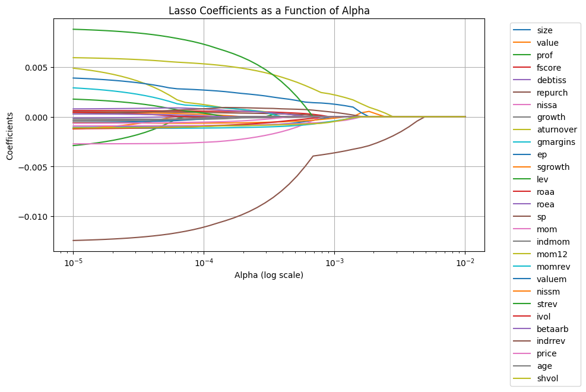
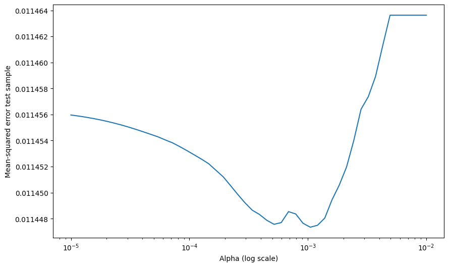
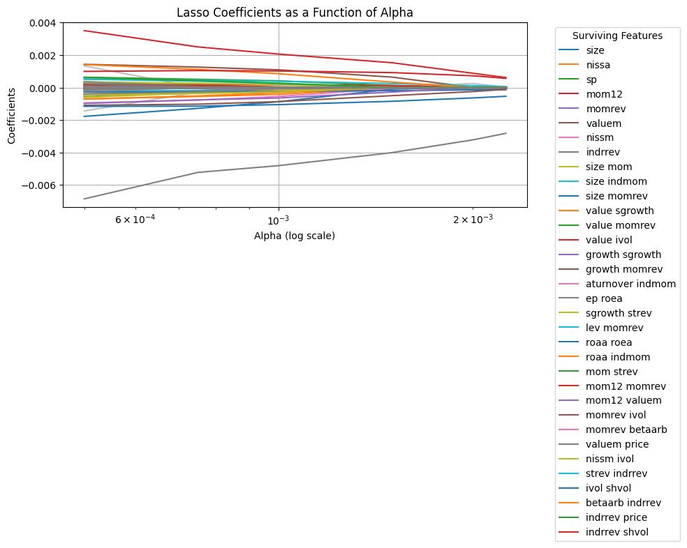
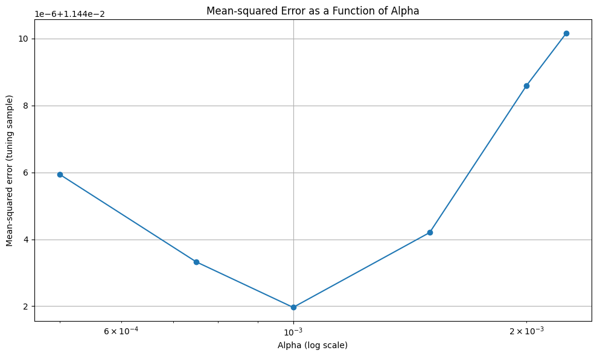
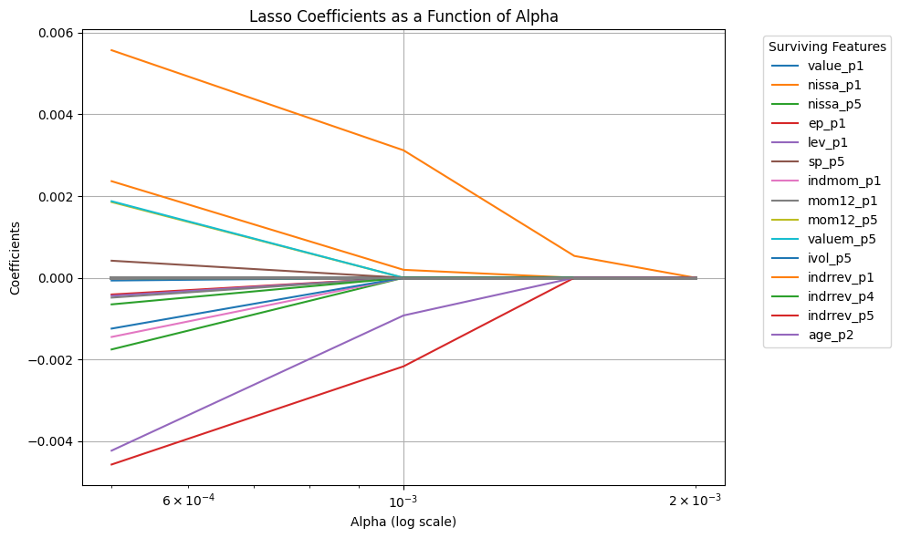
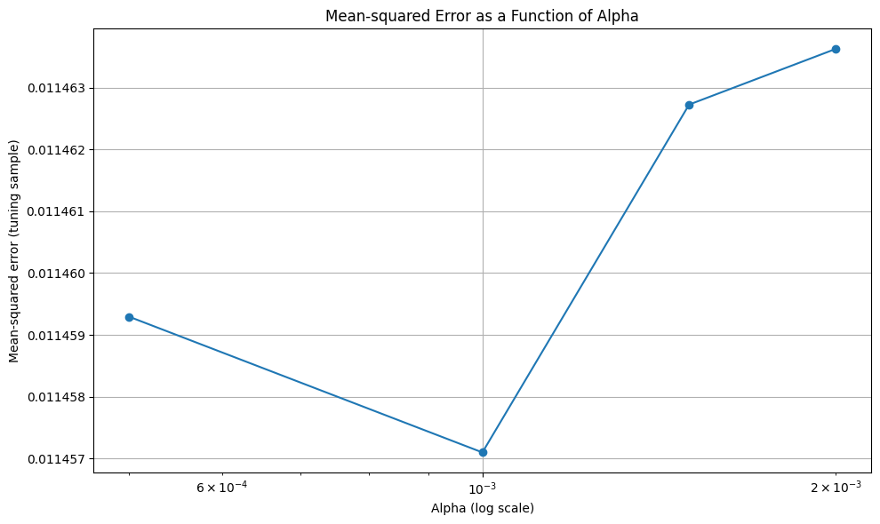
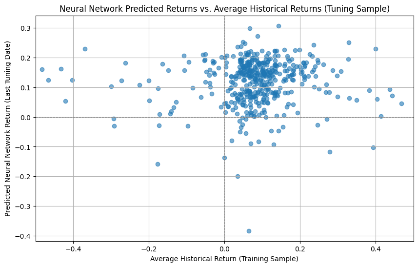
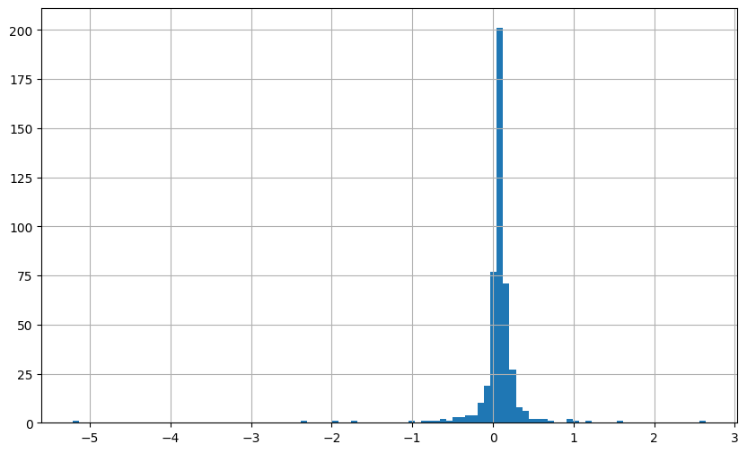
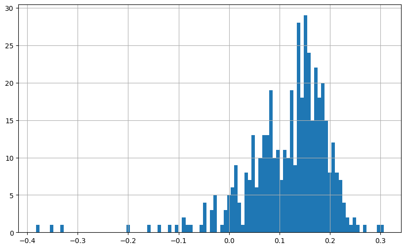

Machine Learning#
🎯 Learning Objectives
By the end of this notebook, you should be able to:
Differentiate supervised vs. unsupervised learning and select appropriate models for tabular, text, image, and time-series data.
Build baselines and compare models using proper cross-validation and out-of-sample evaluation.
Control overfitting with regularization, feature engineering, and early stopping.
Interpret models (coefficients, feature importance, SHAP/partial dependence) to inform decisions.
Deploy practical heuristics about when each method shines given data type, size, noise, and compute constraints.
The basic issue in finance is that we want to know how expected returns move around, but we only observe realized returns
We can compile lots and lots of information/data about different assets
We saw how to run OLS regression of returns on a large set of characteristics ( I think it was 30)
But we didn;t even think interactions among them–say the value characteristic might have different information for returns for small vs big stocks–considering all these interactions would leads us to estimate 900 coefficients. And of course there are potentially many more characteristics and their lags that could be informative for expected returns and co-movement
You can see that very quickly you run out of data
Here where recent advances in machine learning can be super useful
In the end of the day we want to estimate a function F that maps observed characteristics in future returns
This function can be linear
or linear in the interactions
Or have even higher order or non-linear relationships, that is instead of including the chracteristic , we include dummies according to the rank of the characteristic relative to other stocks in the cross-sectional
Here where the tools if machine learning can be useful to us
We will now discuss a few of the most used methods
Lasso Regression (L1 regularization)
Random Forest Regression
Gradient Boosted Regression Trees (GBRT)
Elastic Net Regression (combination of L1 and L2 regularization)
Neural Network Regression (customizable number of layers)
We will apply those to our data set
We will have a training/estimation sample (1972-1992) and a tuning sample (1992-2002)
We will not use it today but I also reserved a test sample (2002-2016) for you to evaluate your favorite model.
# url = "../../assets/data/characteristics_raw.csv"
# df_X = pd.read_csv(url)
# # This simply shits the date to be in an end of month basis
# df_X['date'] = pd.to_datetime(df_X['date'], format='%m/%Y')
# df_X.set_index(['date','permno'],inplace=True)
# df_X['1972':'1991'].to_pickle('../../assets/data/characteristics19721991.pkl')
# df_X['1992':'2001'].to_pickle('../../assets/data/characteristics19922001.pkl')
# df_X['2002':].to_pickle('../../assets/data/characteristics20022016.pkl')
url = "https://github.com/amoreira2/Fin418/blob/main/assets/data/characteristics19721991.pkl?raw=true"
df_train = pd.read_pickle(url)
df_train=df_train.drop(columns=['rf','rme'])
display(df_train)
url = "https://github.com/amoreira2/Fin418/blob/main/assets/data/characteristics19922001.pkl?raw=true"
df_tuning = pd.read_pickle(url)
df_tuning=df_tuning.drop(columns=['rf','rme'])
display(df_tuning)
| re | size | value | prof | fscore | debtiss | repurch | nissa | growth | aturnover | ... | momrev | valuem | nissm | strev | ivol | betaarb | indrrev | price | age | shvol | ||
|---|---|---|---|---|---|---|---|---|---|---|---|---|---|---|---|---|---|---|---|---|---|---|
| date | permno | |||||||||||||||||||||
| 1972-07-01 | 10006 | 0.028600 | 12.399869 | -0.125361 | -1.662274 | 1 | 0 | 0 | 0.691632 | 0.055546 | -0.402127 | ... | 0.241023 | 0.046338 | 0.691632 | -0.025281 | 0.015680 | 0.875315 | -0.033445 | 3.769883 | 5.135798 | 0.264547 |
| 10102 | 0.039757 | 12.217334 | 0.354954 | -1.533574 | 3 | 0 | 0 | 0.702357 | 0.032625 | -0.280661 | ... | 0.280555 | 0.525299 | 0.702357 | -0.066667 | 0.013668 | 1.167972 | -0.029807 | 2.862201 | 5.135798 | 0.159992 | |
| 10137 | -0.044767 | 13.069874 | -0.088697 | -2.285618 | 2 | 1 | 0 | 0.735522 | 0.130297 | -1.473819 | ... | -0.024738 | -0.042177 | 0.735522 | -0.034483 | 0.010347 | 0.755496 | -0.020019 | 3.044522 | 5.135798 | 0.102413 | |
| 10145 | -0.062422 | 13.608366 | 0.075484 | -1.563468 | 3 | 0 | 0 | 0.693165 | 0.033959 | -0.210598 | ... | 0.529800 | 0.062691 | 0.693165 | -0.036735 | 0.018345 | 1.097189 | -0.011115 | 3.384390 | 5.135798 | 0.208178 | |
| 10153 | -0.065600 | 11.752572 | 0.944457 | -1.443505 | 2 | 0 | 1 | 0.688459 | 0.016692 | 0.087675 | ... | 0.158727 | 1.029572 | 0.688459 | -0.107407 | 0.020491 | 1.246057 | -0.079017 | 2.484907 | 5.135798 | 0.215979 | |
| ... | ... | ... | ... | ... | ... | ... | ... | ... | ... | ... | ... | ... | ... | ... | ... | ... | ... | ... | ... | ... | ... | ... |
| 1991-01-01 | 90369 | 0.047830 | 12.802441 | -0.693011 | -3.167399 | 3 | 1 | 0 | 0.693650 | 0.204222 | -1.182231 | ... | 0.431073 | -0.612392 | 0.692859 | 0.028794 | 0.020753 | 0.789805 | -0.019639 | 3.496508 | 4.174387 | 0.482675 |
| 90609 | 0.297830 | 14.421899 | -1.469354 | -0.192073 | 5 | 0 | 0 | 0.795055 | 0.421466 | 0.196485 | ... | -0.311436 | -2.001907 | 0.725049 | 0.047619 | 0.023579 | 1.373399 | -0.001491 | 3.496508 | 4.304065 | 1.249267 | |
| 91380 | 0.277409 | 14.513939 | -0.929698 | -0.441911 | 6 | 1 | 0 | 0.697018 | 0.092376 | 0.446092 | ... | 0.253155 | -0.340558 | 0.695715 | 0.052273 | 0.026668 | 1.325531 | -0.026854 | 2.442347 | 4.219508 | 0.417471 | |
| 91695 | 0.110589 | 12.718260 | -1.582293 | -0.409848 | 5 | 1 | 0 | 0.693282 | -0.004634 | 0.234171 | ... | -0.006908 | -1.302569 | 0.692102 | 0.117647 | 0.028104 | 0.783925 | 0.045506 | 3.167583 | 4.204693 | 0.589516 | |
| 92655 | 0.177596 | 12.899849 | -1.385607 | -0.341648 | 6 | 1 | 0 | 0.884419 | 0.340396 | 0.553001 | ... | 0.298045 | -1.877044 | 0.875576 | 0.148148 | 0.028847 | 1.096923 | 0.099715 | 3.146305 | 4.343805 | 1.262840 |
204284 rows × 30 columns
| re | size | value | prof | fscore | debtiss | repurch | nissa | growth | aturnover | ... | momrev | valuem | nissm | strev | ivol | betaarb | indrrev | price | age | shvol | ||
|---|---|---|---|---|---|---|---|---|---|---|---|---|---|---|---|---|---|---|---|---|---|---|
| date | permno | |||||||||||||||||||||
| 1992-01-01 | 10078 | 0.071490 | 14.803577 | -0.821429 | -0.351670 | 5 | 1 | 0 | 0.713175 | 0.337526 | 0.326859 | ... | -0.375068 | -0.827133 | 0.688756 | 0.182292 | 0.036514 | 1.279770 | 0.143753 | 3.345508 | 4.276666 | 1.612871 |
| 10095 | -0.131137 | 13.042999 | -1.288738 | -2.907817 | 2 | 1 | 1 | 0.823573 | 0.299850 | -2.007233 | ... | 0.097856 | -2.439453 | 0.879456 | 0.497268 | 0.044026 | 1.046930 | 0.331867 | 4.226834 | 4.276666 | 2.038652 | |
| 10104 | 0.272462 | 13.962658 | -0.943996 | 0.072345 | 3 | 0 | 0 | 0.712626 | 0.536861 | 0.209624 | ... | -0.919460 | -1.741446 | 0.710315 | 0.074074 | 0.032754 | 1.434134 | -0.091418 | 2.674149 | 4.276666 | 1.062730 | |
| 10107 | 0.077499 | 16.289499 | -2.240325 | -0.123331 | 5 | 1 | 1 | 0.703894 | 0.427835 | 0.068269 | ... | -0.010327 | -2.681148 | 0.708289 | 0.143959 | 0.013396 | 1.383749 | -0.021534 | 4.711780 | 4.276666 | 0.735207 | |
| 10119 | 0.158277 | 13.891799 | -0.598919 | -2.420088 | 4 | 1 | 0 | 0.693147 | 0.153250 | -0.435732 | ... | 0.056359 | -0.886515 | 0.693128 | 0.098684 | 0.015079 | 0.760442 | -0.015104 | 3.038552 | 4.276666 | 0.145575 | |
| ... | ... | ... | ... | ... | ... | ... | ... | ... | ... | ... | ... | ... | ... | ... | ... | ... | ... | ... | ... | ... | ... | ... |
| 2001-01-01 | 88664 | -0.270994 | 14.544541 | -2.222151 | -0.639122 | 6 | 1 | 1 | 0.706994 | 0.415774 | 0.054443 | ... | 0.117828 | -2.832748 | 0.734983 | 0.158508 | 0.030403 | 0.917149 | 0.241260 | 4.129148 | 5.214936 | 1.044554 |
| 90100 | -0.004434 | 14.481504 | -0.821788 | -1.134622 | 7 | 0 | 1 | 0.655505 | 0.036674 | -0.057457 | ... | -0.123972 | -0.702888 | 0.694680 | 0.291677 | 0.043108 | 0.593961 | 0.162599 | 2.560130 | 4.997212 | 0.430254 | |
| 90609 | 0.647295 | 14.915539 | -2.160840 | -0.608490 | 6 | 1 | 1 | 0.673995 | 0.009418 | -0.422648 | ... | -0.183386 | -0.172097 | 0.679562 | -0.017647 | 0.038304 | 1.443601 | 0.065105 | 1.652258 | 5.267858 | 1.329642 | |
| 91380 | -0.009058 | 13.713922 | 0.137959 | -0.303891 | 6 | 1 | 1 | 0.699451 | -0.106341 | 0.617338 | ... | -0.792238 | -1.032178 | 0.701598 | 0.282815 | 0.037141 | 0.831341 | 0.137473 | 3.308351 | 5.236442 | 1.157457 | |
| 92655 | -0.086296 | 16.449309 | -0.847793 | -0.821228 | 6 | 0 | 1 | 0.661662 | 0.057290 | 0.644070 | ... | -0.115775 | -1.687913 | 0.674296 | 0.046351 | 0.021378 | 0.834816 | -0.021866 | 4.117003 | 5.283204 | 0.619079 |
99615 rows × 30 columns
Lasso Regression#
Lasso (Least Absolute Shrinkage and Selection Operator) regression is a linear regression model with L1 regularization. It minimizes the following objective:
Key Characteristics:
Shrinks some coefficients to exactly zero, effectively performing feature selection.
Useful for sparse models where only a subset of predictors are important.
Struggles with multicollinearity, as it tends to arbitrarily select one among correlated predictors.
Feature Extraction:
Xis extracted from the columns after the first 3.Yis the excess return.Feature Standardization: Standardizes
XusingStandardScaler, which is important for Lasso because it is sensitive to feature scaling.Lasso Regression: Fits a Lasso regression model with a specified regularization strength (
alpha).Evaluation: Outputs the coefficients and ( R^2 ) score on test data, if a train-test split is used.
You can adjust the alpha parameter in Lasso() to tune the regularization strength. A smaller value of alpha reduces regularization, while a larger value increases it.
Note that here we are implicitly using the tuning sample to pick the amount of regularization. So once we pick our favorite alpha, which looks like to 0.002, we need to look at some other sample to if that worked
#We will start by standardizing our characteristics. This is done by subtracting the mean and dividing by the standard deviation.
X_train = df_train.iloc[:, 1:]
X_train= X_train.groupby('date').apply(lambda x: (x - x.mean()) / x.std())
X_tuning = df_tuning.iloc[:, 1:]
X_tuning= X_tuning.groupby('date').apply(lambda x: (x - x.mean()) / x.std())
from sklearn.linear_model import Lasso
from sklearn.model_selection import train_test_split
from sklearn.metrics import mean_squared_error, mean_absolute_error, r2_score
# Extract Y (excess return) and X (characteristics)
Y_train = df_train.iloc[:, 0] # Excess return
Y_tuning = df_tuning.iloc[:, 0] # Excess return
# # Perform Lasso regression
lasso = Lasso(alpha=0.0025) # You can adjust the alpha (regularization strength)
lasso.fit(X_train, Y_train)
# Coefficients and intercept
print("Lasso Coefficients:", lasso.coef_)
print("Intercept:", lasso.intercept_)
Y_pred = lasso.predict(X_tuning)
# Compute Mean Squared Error (MSE)
mse = mean_squared_error(Y_tuning, Y_pred)
print("Mean Squared Error (MSE):", mse)
mae= mean_absolute_error(Y_tuning, Y_pred)
print("Mean Absolute Error (MAE):", mae)
r2 = r2_score(Y_tuning, Y_pred)
print("R-squared (R2):", r2)
Lasso Coefficients: [-0. 0. 0. 0. -0. 0.
-0. -0. 0. -0. 0. -0.
0. -0. 0. 0. 0. 0.
0.00031046 -0. 0. -0. -0. -0.
-0. -0.00223662 -0. 0. -0. ]
Intercept: 0.005779088395769684
Mean Squared Error (MSE): 0.01145434617567078
Mean Absolute Error (MAE): 0.07446115851398497
R-squared (R2): -0.00030052087524023996
# Define a range of alpha values
alphas = np.logspace(-5, -2, 50) # range for alphas
coefficients = []
mses=[]
# Perform Lasso regression for each alpha
for alpha in alphas:
lasso = Lasso(alpha=alpha, max_iter=10000) # Ensure convergence with high iterations
lasso.fit(X_train, Y_train)
coefficients.append(lasso.coef_)
Y_pred = lasso.predict(X_tuning)
mse = mean_squared_error(Y_tuning, Y_pred)
mses.append(mse)
# Convert coefficients to a NumPy array for plotting
coefficients = np.array(coefficients)
# Plot the coefficients as a function of alpha
plt.figure(figsize=(10, 6))
for i in range(coefficients.shape[1]):
plt.plot(alphas, coefficients[:, i])
plt.xscale('log')
plt.xlabel('Alpha (log scale)')
plt.ylabel('Coefficients')
plt.title('Lasso Coefficients as a Function of Alpha')
plt.legend(df_train.iloc[:, 1:].columns, bbox_to_anchor=(1.05, 1), loc='upper left')
plt.grid(True)
plt.tight_layout()
plt.show()
plt.figure(figsize=(10, 6))
plt.plot(alphas, mses)
plt.xlabel('Alpha (log scale)')
plt.ylabel('Mean-squared error test sample')
plt.xscale('log')
plt.show()


Note we are using Mean-squared error as way to evaluate our model
To compute the Mean Squared Error (MSE) for the Lasso model after fitting it to the training data, you can use the mean_squared_error function from sklearn.metrics. Here’s how you can do it based on your original code:
Steps to Compute MSE:
Make Predictions:
Use
lasso.predict(X_test)to get predictions on the test set.
Compute MSE:
Compare the predicted values (
Y_pred) with the actual values (Y_test) usingmean_squared_error.
MSE Calculation:
The formula for MSE is: [ \text{MSE} = \frac{1}{n} \sum_{i=1}^n (y_i - \hat{y}_i)^2 ]
mean_squared_errorautomates this calculation.
Scaling:
Ensure the test set features (
X_test) are transformed using the same scaler fitted on the training set to maintain consistency.
Output:
The MSE provides a measure of how well the model is predicting the excess returns on unseen data. Lower values indicate better performance.
#I will save below our lasso model at our optimal alpha
lasso = Lasso(alpha=0.002, max_iter=10000) # Ensure convergence with high iterations
lasso.fit(X_train, Y_train)
Y_pred = lasso.predict(X_tuning)
mean_squared_error(Y_tuning, Y_pred)
0.011451310991701803
Including Interactions#
One possibility here is that the information is in the interactions of the characteristics, i.e., we want to augment the model to
from sklearn.preprocessing import PolynomialFeatures
# Assuming X_train contains the characteristics
degree = 2 # Degree of interactions (2 means pairwise interactions)
poly = PolynomialFeatures(degree=degree, interaction_only=True, include_bias=False)
# Generate cross-product features
X_train_interactions = poly.fit_transform(X_train)
X_tuning_interactions = poly.fit_transform(X_tuning)
# Feature names (optional: useful for understanding what each column represents)
feature_names = poly.get_feature_names_out(input_features=df_train.iloc[:, 1:].columns)
# Print the shape of the transformed dataset
print("Original X_train shape:", X_train.shape)
print("Transformed X_train shape:", X_train_interactions.shape)
print("Feature Names:", feature_names)
# Get the number of input features
input_dim = X_train_interactions.shape[1]
Original X_train shape: (204284, 29)
Transformed X_train shape: (204284, 435)
Feature Names: ['size' 'value' 'prof' 'fscore' 'debtiss' 'repurch' 'nissa' 'growth'
'aturnover' 'gmargins' 'ep' 'sgrowth' 'lev' 'roaa' 'roea' 'sp' 'mom'
'indmom' 'mom12' 'momrev' 'valuem' 'nissm' 'strev' 'ivol' 'betaarb'
'indrrev' 'price' 'age' 'shvol' 'size value' 'size prof' 'size fscore'
'size debtiss' 'size repurch' 'size nissa' 'size growth' 'size aturnover'
'size gmargins' 'size ep' 'size sgrowth' 'size lev' 'size roaa'
'size roea' 'size sp' 'size mom' 'size indmom' 'size mom12' 'size momrev'
'size valuem' 'size nissm' 'size strev' 'size ivol' 'size betaarb'
'size indrrev' 'size price' 'size age' 'size shvol' 'value prof'
'value fscore' 'value debtiss' 'value repurch' 'value nissa'
'value growth' 'value aturnover' 'value gmargins' 'value ep'
'value sgrowth' 'value lev' 'value roaa' 'value roea' 'value sp'
'value mom' 'value indmom' 'value mom12' 'value momrev' 'value valuem'
'value nissm' 'value strev' 'value ivol' 'value betaarb' 'value indrrev'
'value price' 'value age' 'value shvol' 'prof fscore' 'prof debtiss'
'prof repurch' 'prof nissa' 'prof growth' 'prof aturnover'
'prof gmargins' 'prof ep' 'prof sgrowth' 'prof lev' 'prof roaa'
'prof roea' 'prof sp' 'prof mom' 'prof indmom' 'prof mom12' 'prof momrev'
'prof valuem' 'prof nissm' 'prof strev' 'prof ivol' 'prof betaarb'
'prof indrrev' 'prof price' 'prof age' 'prof shvol' 'fscore debtiss'
'fscore repurch' 'fscore nissa' 'fscore growth' 'fscore aturnover'
'fscore gmargins' 'fscore ep' 'fscore sgrowth' 'fscore lev' 'fscore roaa'
'fscore roea' 'fscore sp' 'fscore mom' 'fscore indmom' 'fscore mom12'
'fscore momrev' 'fscore valuem' 'fscore nissm' 'fscore strev'
'fscore ivol' 'fscore betaarb' 'fscore indrrev' 'fscore price'
'fscore age' 'fscore shvol' 'debtiss repurch' 'debtiss nissa'
'debtiss growth' 'debtiss aturnover' 'debtiss gmargins' 'debtiss ep'
'debtiss sgrowth' 'debtiss lev' 'debtiss roaa' 'debtiss roea'
'debtiss sp' 'debtiss mom' 'debtiss indmom' 'debtiss mom12'
'debtiss momrev' 'debtiss valuem' 'debtiss nissm' 'debtiss strev'
'debtiss ivol' 'debtiss betaarb' 'debtiss indrrev' 'debtiss price'
'debtiss age' 'debtiss shvol' 'repurch nissa' 'repurch growth'
'repurch aturnover' 'repurch gmargins' 'repurch ep' 'repurch sgrowth'
'repurch lev' 'repurch roaa' 'repurch roea' 'repurch sp' 'repurch mom'
'repurch indmom' 'repurch mom12' 'repurch momrev' 'repurch valuem'
'repurch nissm' 'repurch strev' 'repurch ivol' 'repurch betaarb'
'repurch indrrev' 'repurch price' 'repurch age' 'repurch shvol'
'nissa growth' 'nissa aturnover' 'nissa gmargins' 'nissa ep'
'nissa sgrowth' 'nissa lev' 'nissa roaa' 'nissa roea' 'nissa sp'
'nissa mom' 'nissa indmom' 'nissa mom12' 'nissa momrev' 'nissa valuem'
'nissa nissm' 'nissa strev' 'nissa ivol' 'nissa betaarb' 'nissa indrrev'
'nissa price' 'nissa age' 'nissa shvol' 'growth aturnover'
'growth gmargins' 'growth ep' 'growth sgrowth' 'growth lev' 'growth roaa'
'growth roea' 'growth sp' 'growth mom' 'growth indmom' 'growth mom12'
'growth momrev' 'growth valuem' 'growth nissm' 'growth strev'
'growth ivol' 'growth betaarb' 'growth indrrev' 'growth price'
'growth age' 'growth shvol' 'aturnover gmargins' 'aturnover ep'
'aturnover sgrowth' 'aturnover lev' 'aturnover roaa' 'aturnover roea'
'aturnover sp' 'aturnover mom' 'aturnover indmom' 'aturnover mom12'
'aturnover momrev' 'aturnover valuem' 'aturnover nissm' 'aturnover strev'
'aturnover ivol' 'aturnover betaarb' 'aturnover indrrev'
'aturnover price' 'aturnover age' 'aturnover shvol' 'gmargins ep'
'gmargins sgrowth' 'gmargins lev' 'gmargins roaa' 'gmargins roea'
'gmargins sp' 'gmargins mom' 'gmargins indmom' 'gmargins mom12'
'gmargins momrev' 'gmargins valuem' 'gmargins nissm' 'gmargins strev'
'gmargins ivol' 'gmargins betaarb' 'gmargins indrrev' 'gmargins price'
'gmargins age' 'gmargins shvol' 'ep sgrowth' 'ep lev' 'ep roaa' 'ep roea'
'ep sp' 'ep mom' 'ep indmom' 'ep mom12' 'ep momrev' 'ep valuem'
'ep nissm' 'ep strev' 'ep ivol' 'ep betaarb' 'ep indrrev' 'ep price'
'ep age' 'ep shvol' 'sgrowth lev' 'sgrowth roaa' 'sgrowth roea'
'sgrowth sp' 'sgrowth mom' 'sgrowth indmom' 'sgrowth mom12'
'sgrowth momrev' 'sgrowth valuem' 'sgrowth nissm' 'sgrowth strev'
'sgrowth ivol' 'sgrowth betaarb' 'sgrowth indrrev' 'sgrowth price'
'sgrowth age' 'sgrowth shvol' 'lev roaa' 'lev roea' 'lev sp' 'lev mom'
'lev indmom' 'lev mom12' 'lev momrev' 'lev valuem' 'lev nissm'
'lev strev' 'lev ivol' 'lev betaarb' 'lev indrrev' 'lev price' 'lev age'
'lev shvol' 'roaa roea' 'roaa sp' 'roaa mom' 'roaa indmom' 'roaa mom12'
'roaa momrev' 'roaa valuem' 'roaa nissm' 'roaa strev' 'roaa ivol'
'roaa betaarb' 'roaa indrrev' 'roaa price' 'roaa age' 'roaa shvol'
'roea sp' 'roea mom' 'roea indmom' 'roea mom12' 'roea momrev'
'roea valuem' 'roea nissm' 'roea strev' 'roea ivol' 'roea betaarb'
'roea indrrev' 'roea price' 'roea age' 'roea shvol' 'sp mom' 'sp indmom'
'sp mom12' 'sp momrev' 'sp valuem' 'sp nissm' 'sp strev' 'sp ivol'
'sp betaarb' 'sp indrrev' 'sp price' 'sp age' 'sp shvol' 'mom indmom'
'mom mom12' 'mom momrev' 'mom valuem' 'mom nissm' 'mom strev' 'mom ivol'
'mom betaarb' 'mom indrrev' 'mom price' 'mom age' 'mom shvol'
'indmom mom12' 'indmom momrev' 'indmom valuem' 'indmom nissm'
'indmom strev' 'indmom ivol' 'indmom betaarb' 'indmom indrrev'
'indmom price' 'indmom age' 'indmom shvol' 'mom12 momrev' 'mom12 valuem'
'mom12 nissm' 'mom12 strev' 'mom12 ivol' 'mom12 betaarb' 'mom12 indrrev'
'mom12 price' 'mom12 age' 'mom12 shvol' 'momrev valuem' 'momrev nissm'
'momrev strev' 'momrev ivol' 'momrev betaarb' 'momrev indrrev'
'momrev price' 'momrev age' 'momrev shvol' 'valuem nissm' 'valuem strev'
'valuem ivol' 'valuem betaarb' 'valuem indrrev' 'valuem price'
'valuem age' 'valuem shvol' 'nissm strev' 'nissm ivol' 'nissm betaarb'
'nissm indrrev' 'nissm price' 'nissm age' 'nissm shvol' 'strev ivol'
'strev betaarb' 'strev indrrev' 'strev price' 'strev age' 'strev shvol'
'ivol betaarb' 'ivol indrrev' 'ivol price' 'ivol age' 'ivol shvol'
'betaarb indrrev' 'betaarb price' 'betaarb age' 'betaarb shvol'
'indrrev price' 'indrrev age' 'indrrev shvol' 'price age' 'price shvol'
'age shvol']
# Define a range of alpha values
alphas = [0.0005,0.00075,0.001,0.0015,0.002,0.00225] # range for alphas
coefficients = []
mses=[]
# Perform Lasso regression for each alpha
for alpha in alphas:
lasso = Lasso(alpha=alpha, max_iter=10000) # Ensure convergence with high iterations
lasso.fit(X_train_interactions, Y_train)
coefficients.append(lasso.coef_)
Y_pred = lasso.predict(X_tuning_interactions)
mse = mean_squared_error(Y_tuning, Y_pred)
mses.append(mse)
# Convert coefficients to a NumPy array for plotting
coefficients = np.array(coefficients)
alpha_index = alphas.index(0.001)
surviving_features = np.where(coefficients[alpha_index, :] != 0)[0]
# Plot the coefficients as a function of alpha
plt.figure(figsize=(10, 6))
for i in range(coefficients.shape[1]):
if i in surviving_features:
# Plot surviving features with legend
plt.plot(alphas, coefficients[:, i], label=feature_names[i])
else:
# Plot non-surviving features without legend
plt.plot(alphas, coefficients[:, i], color='gray', alpha=0.5)
plt.xscale('log')
plt.xlabel('Alpha (log scale)')
plt.ylabel('Coefficients')
plt.title('Lasso Coefficients as a Function of Alpha')
plt.legend(bbox_to_anchor=(1.05, 1), loc='upper left', title="Surviving Features")
plt.grid(True)
plt.tight_layout()
plt.show()
# Plot Mean-squared error for tuning sample
plt.figure(figsize=(10, 6))
plt.plot(alphas, mses, marker='o')
plt.xlabel('Alpha (log scale)')
plt.ylabel('Mean-squared error (tuning sample)')
plt.xscale('log')
plt.title('Mean-squared Error as a Function of Alpha')
plt.grid(True)
plt.tight_layout()
plt.show()


Note that there is virtually no improvement out of sample
Non-Parametric Models#
Instead of assuming that the relationship between the dependent variable y and the characteristic size is linear, we consider a more flexible model. In this approach, the relationship is linear in terms of the percentiles of the characteristic.
Original Linear Model In a linear regression, the model is typically expressed as:
where:
\( y_{i, t+1} \): The dependent variable (e.g., return of asset \( i \) at time \( t+1 \)).
\( size_{i, t} \): A characteristic of asset \( i \) at time \( t \) (e.g., market capitalization).
\( \beta \): A regression coefficient indicating the relationship between \( size_{i, t} \) and \( y_{i, t+1} \).
Non-Parametric Percentile-Based Model
To introduce non-linearity, we instead model \( y_{i, t+1} \) as a function of the percentiles of \( size \) within each time period. The model becomes:
where:
\( p \): The percentile group (e.g., \( p = 1 \) for the 0-20% percentile, \( p = 2 \) for the 20-40% percentile, etc.).
\( \beta_p \): The regression coefficient for percentile \( p \).
\( 1_{\{size_{i, t} \in \text{Percentile}(p, \text{size}_t)\}} \): An indicator function that equals 1 if \( size_{i, t} \) falls in the \( p \)-th percentile of the \( size \) distribution for time \( t \), and 0 otherwise.
Explanation
Intuition: Instead of assuming a linear relationship between \( y \) and \( size \), the model captures how \( y \) varies across different percentile ranges of \( size \).
Flexibility: The model allows for different effects (\( \beta_p \)) for each percentile range, enabling it to capture non-linear relationships.
Interpretation: For example, \( \beta_1 \) represents the average effect of assets in the lowest 20% of \( size \) on \( y \), while \( \beta_5 \) represents the effect for assets in the highest 20%.
This approach is particularly useful when the relationship between \( y \) and \( size \) is not well-approximated by a straight line but instead varies across different ranges of \( size \).
# Define the number of percentiles
num_percentiles = 5
# Initialize an empty list to store the new columns
new_columns = []
df_processed = df_train.iloc[:, 1:].copy()
# Loop through each characteristic
for characteristic in df_processed.columns:
# Group by date and calculate percentiles
grouped = df_processed[characteristic].groupby(level='date')
# Apply percentile binning for each date
percentile_bins = grouped.apply(
lambda x: pd.qcut(x, q=num_percentiles, labels=False, duplicates='drop') # Bins from 0 to 4
)
# After grouped.apply, percentile_bins might have an extra 'date' level in its MultiIndex.
# We need to drop this redundant outermost level to match the df_processed's index structure.
if percentile_bins.index.nlevels > df_processed.index.nlevels:
percentile_bins = percentile_bins.droplevel(0)
# Create binary columns for each percentile
for percentile in range(num_percentiles):
col_name = f"{characteristic}_p{percentile+1}"
df_processed[col_name] = (percentile_bins == percentile).astype(int)
df_processed=df_processed.copy()
new_columns.append(col_name)
# Keep the new columns only for verification (if needed)
new_characteristics_train_df = df_processed[new_columns].copy()
# Initialize an empty list to store the new columns
new_columns = []
df_processed = df_tuning.iloc[:, 1:].copy()
# Loop through each characteristic
for characteristic in df_processed.columns:
# Group by date and calculate percentiles
grouped = df_processed[characteristic].groupby(level='date')
# Apply percentile binning for each date
percentile_bins = grouped.apply(
lambda x: pd.qcut(x, q=num_percentiles, labels=False, duplicates='drop') # Bins from 0 to 4
)
# After grouped.apply, percentile_bins might have an extra 'date' level in its MultiIndex.
# We need to drop this redundant outermost level to match the df_processed's index structure.
if percentile_bins.index.nlevels > df_processed.index.nlevels:
percentile_bins = percentile_bins.droplevel(0)
# Create binary columns for each percentile
for percentile in range(num_percentiles):
col_name = f"{characteristic}_p{percentile+1}"
df_processed[col_name] = (percentile_bins == percentile).astype(int)
df_processed=df_processed.copy()
new_columns.append(col_name)
# Keep the new columns only for verification (if needed)
new_characteristics_tuning_df = df_processed[new_columns].copy()
# Output the shape of the new DataFrame
print("Original DataFrame shape:", df_train.iloc[:, 1:].shape)
print("New DataFrame shape after :", new_characteristics_df.iloc[:, 1:].shape)
new_characteristics_train_df
Original DataFrame shape: (204284, 29)
New DataFrame shape after : (204284, 144)
| size_p1 | size_p2 | size_p3 | size_p4 | size_p5 | value_p1 | value_p2 | value_p3 | value_p4 | value_p5 | ... | age_p1 | age_p2 | age_p3 | age_p4 | age_p5 | shvol_p1 | shvol_p2 | shvol_p3 | shvol_p4 | shvol_p5 | ||
|---|---|---|---|---|---|---|---|---|---|---|---|---|---|---|---|---|---|---|---|---|---|---|
| date | permno | |||||||||||||||||||||
| 1972-07-01 | 10006 | 0 | 0 | 1 | 0 | 0 | 0 | 0 | 0 | 1 | 0 | ... | 0 | 0 | 1 | 0 | 0 | 0 | 0 | 0 | 1 | 0 |
| 10102 | 0 | 1 | 0 | 0 | 0 | 0 | 0 | 0 | 0 | 1 | ... | 0 | 0 | 1 | 0 | 0 | 0 | 0 | 1 | 0 | 0 | |
| 10137 | 0 | 0 | 0 | 1 | 0 | 0 | 0 | 0 | 1 | 0 | ... | 0 | 0 | 1 | 0 | 0 | 0 | 1 | 0 | 0 | 0 | |
| 10145 | 0 | 0 | 0 | 1 | 0 | 0 | 0 | 0 | 0 | 1 | ... | 0 | 0 | 1 | 0 | 0 | 0 | 0 | 0 | 1 | 0 | |
| 10153 | 1 | 0 | 0 | 0 | 0 | 0 | 0 | 0 | 0 | 1 | ... | 0 | 0 | 1 | 0 | 0 | 0 | 0 | 0 | 1 | 0 | |
| ... | ... | ... | ... | ... | ... | ... | ... | ... | ... | ... | ... | ... | ... | ... | ... | ... | ... | ... | ... | ... | ... | ... |
| 1991-01-01 | 90369 | 1 | 0 | 0 | 0 | 0 | 0 | 0 | 1 | 0 | 0 | ... | 1 | 0 | 0 | 0 | 0 | 0 | 0 | 0 | 1 | 0 |
| 90609 | 0 | 0 | 0 | 1 | 0 | 1 | 0 | 0 | 0 | 0 | ... | 1 | 0 | 0 | 0 | 0 | 0 | 0 | 0 | 0 | 1 | |
| 91380 | 0 | 0 | 0 | 1 | 0 | 0 | 1 | 0 | 0 | 0 | ... | 1 | 0 | 0 | 0 | 0 | 0 | 0 | 1 | 0 | 0 | |
| 91695 | 1 | 0 | 0 | 0 | 0 | 1 | 0 | 0 | 0 | 0 | ... | 1 | 0 | 0 | 0 | 0 | 0 | 0 | 0 | 1 | 0 | |
| 92655 | 1 | 0 | 0 | 0 | 0 | 1 | 0 | 0 | 0 | 0 | ... | 1 | 0 | 0 | 0 | 0 | 0 | 0 | 0 | 0 | 1 |
204284 rows × 145 columns
# Define a range of alpha values
alphas = [0.0005,0.001,0.0015,0.002] # range for alphas
coefficients = []
mses=[]
# Perform Lasso regression for each alpha
for alpha in alphas:
lasso = Lasso(alpha=alpha, max_iter=10000) # Ensure convergence with high iterations
lasso.fit(new_characteristics_train_df.values, Y_train)
coefficients.append(lasso.coef_)
Y_pred = lasso.predict(new_characteristics_tuning_df.values)
mse = mean_squared_error(Y_tuning, Y_pred)
mses.append(mse)
# Convert coefficients to a NumPy array for plotting
coefficients = np.array(coefficients)
alpha_index = alphas.index(0.0005)
surviving_features = np.where(coefficients[alpha_index, :] != 0)[0]
# Plot the coefficients as a function of alpha
plt.figure(figsize=(10, 6))
for i in range(coefficients.shape[1]):
if i in surviving_features:
# Plot surviving features with legend
plt.plot(alphas, coefficients[:, i], label=new_characteristics_df.columns[i])
else:
# Plot non-surviving features without legend
plt.plot(alphas, coefficients[:, i], color='gray', alpha=0.5)
plt.xscale('log')
plt.xlabel('Alpha (log scale)')
plt.ylabel('Coefficients')
plt.title('Lasso Coefficients as a Function of Alpha')
plt.legend(bbox_to_anchor=(1.05, 1), loc='upper left', title="Surviving Features")
plt.grid(True)
plt.tight_layout()
plt.show()
# Plot Mean-squared error for tuning sample
plt.figure(figsize=(10, 6))
plt.plot(alphas, mses, marker='o')
plt.xlabel('Alpha (log scale)')
plt.ylabel('Mean-squared error (tuning sample)')
plt.xscale('log')
plt.title('Mean-squared Error as a Function of Alpha')
plt.grid(True)
plt.tight_layout()
plt.show()


Random Forest Regression#

Random Forest is an ensemble method that combines multiple decision trees to make predictions. Each tree is trained on a bootstrap sample of the data, and predictions are averaged:
Where \( h_t(X) \) is the prediction of the ( t )-th tree.
Key Characteristics:
Reduces overfitting by averaging predictions across trees.
Handles non-linear relationships and interactions between features well.
Relatively robust to noisy data and outliers.
Does not extrapolate beyond the range of the training data.
Random Forest Regressor:
A
RandomForestRegressoris initialized with:n_estimators=100: Builds 100 decision trees.max_depth=None: Allows trees to grow until all leaves are pure or contain less than the minimum samples.random_state=42: Ensures reproducibility.n_jobs=-1: Utilizes all available CPU cores for faster training.
Feature Importances:
The relative importance of each feature is extracted using the
feature_importances_attribute and displayed in a sorted DataFrame.
Adjusting Hyperparameters:
You can tune the following hyperparameters to optimize model performance:
n_estimators: Increase or decrease the number of trees.max_depth: Limit the depth of trees to prevent overfitting.min_samples_split: Minimum number of samples required to split an internal node.min_samples_leaf: Minimum number of samples required to be at a leaf node.
from sklearn.ensemble import RandomForestRegressor
# Build the Random Forest Regressor
random_forest = RandomForestRegressor(
n_estimators=50, # Number of trees in the forest
max_depth=3, # Maximum depth of the trees
random_state=42, # Ensures reproducibility
n_jobs=-1 # Use all available cores for training
)
# Train the Random Forest model
random_forest.fit(X_train, Y_train)
# Make predictions on the test set
Y_pred = random_forest.predict(X_tuning)
# Evaluate the model
mse = mean_squared_error(Y_tuning, Y_pred)
r2 = r2_score(Y_tuning, Y_pred)
mse = mean_squared_error(Y_tuning, Y_pred)
print("Mean Squared Error (MSE):", mse)
mae= mean_absolute_error(Y_tuning, Y_pred)
print("Mean Absolute Error (MAE):", mae)
r2 = r2_score(Y_tuning, Y_pred)
print("R-squared (R2):", r2)
# Optional: Feature importance
feature_importances = random_forest.feature_importances_
feature_names = df_train.iloc[:, 1:].columns
importance_df = pd.DataFrame({
'Feature': feature_names,
'Importance': feature_importances
}).sort_values(by='Importance', ascending=False)
print("\nFeature Importances:")
print(importance_df)
Mean Squared Error (MSE): 0.011450041255742194
Mean Absolute Error (MAE): 0.07447397468980559
R-squared (R2): 7.542495185886011e-05
Feature Importances:
Feature Importance
4 debtiss 0.581639
25 indrrev 0.188957
6 nissa 0.080906
5 repurch 0.053310
20 valuem 0.030706
23 ivol 0.026072
16 mom 0.014695
28 shvol 0.009024
26 price 0.006108
24 betaarb 0.003942
18 mom12 0.003188
27 age 0.000761
0 size 0.000690
12 lev 0.000000
11 sgrowth 0.000000
10 ep 0.000000
9 gmargins 0.000000
8 aturnover 0.000000
7 growth 0.000000
2 prof 0.000000
3 fscore 0.000000
1 value 0.000000
19 momrev 0.000000
14 roea 0.000000
15 sp 0.000000
13 roaa 0.000000
17 indmom 0.000000
21 nissm 0.000000
22 strev 0.000000
Gradient Boosted Regression Trees (GBRT)#
GBRT is an ensemble technique that builds trees sequentially, where each tree corrects the errors of the previous one. The prediction is updated iteratively:
Where:
\( g_t(X) \): Gradient of the loss function with respect to predictions.
\( \nu\): Learning rate, controlling the contribution of each tree.
Key Characteristics:
Optimizes a differentiable loss function (e.g., squared error for regression).
Can capture complex, non-linear patterns in the data.
Requires careful tuning of hyperparameters (e.g., learning rate, number of trees, maximum tree depth).
Gradient Boosted Regression Trees:
A
GradientBoostingRegressoris initialized with:n_estimators=100: Builds 100 trees.learning_rate=0.1: Controls the contribution of each tree to the final prediction.max_depth=3: Limits the depth of individual trees to prevent overfitting.random_state=42: Ensures reproducibility.
Adjusting Hyperparameters:
You can tune the following hyperparameters to optimize the model:
n_estimators: Increase for more stages of boosting.learning_rate: Decrease for smaller incremental updates (often requires increasingn_estimators).max_depth: Control tree depth to balance bias and variance.subsample: Use a fraction of samples for each stage (e.g.,subsample=0.8for 80% of the data).
from sklearn.ensemble import GradientBoostingRegressor
# Build the Gradient Boosting Regressor
gbrt = GradientBoostingRegressor(
n_estimators=50, # Number of boosting stages to perform
learning_rate=0.2, # Shrinks the contribution of each tree
max_depth=3, # Maximum depth of each tree
random_state=42 # Ensures reproducibility
)
# Train the Gradient Boosting model
gbrt.fit(X_train, Y_train)
# Make predictions on the test set
Y_pred = gbrt.predict(X_tuning)
# Evaluate the model
mse = mean_squared_error(Y_tuning, Y_pred)
r2 = r2_score(Y_tuning, Y_pred)
mse = mean_squared_error(Y_tuning, Y_pred)
print("Mean Squared Error (MSE):", mse)
mae= mean_absolute_error(Y_tuning, Y_pred)
print("Mean Absolute Error (MAE):", mae)
r2 = r2_score(Y_tuning, Y_pred)
print("R-squared (R2):", r2)
# Optional: Feature importance
feature_importances = gbrt.feature_importances_
feature_names = df_train.iloc[:, 1:].columns
importance_df = pd.DataFrame({
'Feature': feature_names,
'Importance': feature_importances
}).sort_values(by='Importance', ascending=False)
print("\nFeature Importances:")
print(importance_df)
Mean Squared Error (MSE): 0.011948129643274456
Mean Absolute Error (MAE): 0.07697346355195878
R-squared (R2): -0.04342230646372336
Feature Importances:
Feature Importance
5 repurch 0.370275
4 debtiss 0.369992
6 nissa 0.109332
3 fscore 0.038168
25 indrrev 0.023693
27 age 0.018241
23 ivol 0.013273
18 mom12 0.011229
26 price 0.008908
21 nissm 0.008055
24 betaarb 0.005189
28 shvol 0.004789
20 valuem 0.004599
17 indmom 0.002590
10 ep 0.001971
22 strev 0.001831
8 aturnover 0.001296
16 mom 0.001198
12 lev 0.001158
2 prof 0.001071
15 sp 0.001040
13 roaa 0.000543
0 size 0.000471
19 momrev 0.000465
11 sgrowth 0.000436
1 value 0.000187
7 growth 0.000000
9 gmargins 0.000000
14 roea 0.000000
Elastic Net Regression#
Elastic Net combines L1 (Lasso) and L2 (Ridge) regularization to balance feature selection and multicollinearity handling. The objective function is:
Where:
\( \|\beta\|_1 \): Lasso penalty encourages sparsity.
\( \|\beta\|_2^2 \): Ridge penalty shrinks coefficients to reduce multicollinearity.
Key Characteristics:
Balances Lasso’s feature selection and Ridge’s stability with correlated predictors.
Controlled by two hyperparameters:
\( \alpha \): Overall regularization strength.
\( \rho \) (mixing ratio): Balance between L1 and L2 penalties.
Elastic Net Regressor:
The
ElasticNetregressor is initialized with:alpha=0.1: Controls the overall strength of regularization.l1_ratio=0.5: Specifies the mix of L1 (Lasso) and L2 (Ridge) penalties:l1_ratio=0 : Equivalent to Ridge regression.
l1_ratio=1 : Equivalent to Lasso regression.
l1_ratio=0.5 : Balances L1 and L2 penalties.
random_state=42: Ensures reproducibility.
Adjusting Hyperparameters:
alpha:Larger values apply stronger regularization, reducing overfitting but increasing bias.
l1_ratio:Adjust to control the balance between L1 and L2 penalties:
Increase towards 1 for more sparsity (feature selection).
Decrease towards 0 to favor Ridge-like behavior (handles multicollinearity).
from sklearn.linear_model import ElasticNet
# Initialize and train the Elastic Net regressor
elastic_net = ElasticNet(
alpha=0.001, # Regularization strength (higher values = stronger penalty)
l1_ratio=0.5, # Balance between L1 (Lasso) and L2 (Ridge) regularization
random_state=42 # Ensures reproducibility
)
# Train the Elastic Net model
elastic_net.fit(X_train, Y_train)
# Make predictions on the test set
Y_pred = elastic_net.predict(X_tuning)
# Evaluate the model
mse = mean_squared_error(Y_tuning, Y_pred)
r2 = r2_score(Y_tuning, Y_pred)
mse = mean_squared_error(Y_tuning, Y_pred)
print("Mean Squared Error (MSE):", mse)
mae= mean_absolute_error(Y_tuning, Y_pred)
print("Mean Absolute Error (MAE):", mae)
r2 = r2_score(Y_tuning, Y_pred)
print("R-squared (R2):", r2)
# Print the coefficients
coefficients = pd.DataFrame({
'Feature': df_train.iloc[:, 1:].columns,
'Coefficient': elastic_net.coef_
}).sort_values(by='Coefficient', ascending=False)
print("\nCoefficients:")
print(coefficients)
Mean Squared Error (MSE): 0.0114476248931202
Mean Absolute Error (MAE): 0.07443452451525671
R-squared (R2): 0.00028644431100299794
Coefficients:
Feature Coefficient
18 mom12 0.003526
22 strev 0.002188
20 valuem 0.001659
15 sp 0.000756
3 fscore 0.000371
5 repurch 0.000235
14 roea 0.000163
2 prof 0.000163
10 ep 0.000000
11 sgrowth 0.000000
8 aturnover 0.000000
4 debtiss -0.000000
1 value 0.000000
27 age -0.000000
26 price -0.000000
24 betaarb -0.000000
12 lev 0.000000
9 gmargins 0.000000
17 indmom 0.000000
13 roaa 0.000000
7 growth -0.000072
23 ivol -0.000332
21 nissm -0.000454
0 size -0.000622
6 nissa -0.000697
28 shvol -0.000777
19 momrev -0.000898
16 mom -0.001098
25 indrrev -0.006143
Neural Network Regression#

A neural network is a flexible, non-linear model that uses layers of neurons to approximate complex relationships between inputs (( X )) and outputs (( Y )). The simplest form of a feedforward neural network can be expressed as:
Key Characteristics:
Consists of an input layer, hidden layers, and an output layer.
Activation functions (\(\sigma\), e.g., ReLU or sigmoid) introduce non-linearity.
\(ReLU(x)=max(0,x)\)
\(Sigmoid(x)=1/(1+e^{−x})\)
The number of layers and neurons can be tuned to fit data complexity.
Requires careful tuning of hyperparameters (e.g., learning rate, number of layers, epochs).
Building the Neural Network:
Function
build_and_train_model:Parameters:
num_layers: Number of layers in the neural network (free parameter).input_dim: Number of input features (dimensions).
Model Architecture:
Input Layer:
Uses
Denselayer with 64 neurons andreluactivation function.input_dimspecifies the number of input features.
Hidden Layers:
Adds additional hidden layers based on
num_layers.Each hidden layer has 64 neurons with
reluactivation.
Output Layer:
A single neuron without activation (linear activation) for regression output.
Compilation:
Uses the
adamoptimizer andmean_squared_errorloss function suitable for regression tasks.
Training: In addition to the network structure (layers and neurons), you also have to pick parameters that control the training process
Epochs: Controls the total number of training cycles. More epochs mean more opportunities for the model to learn, but excessive epochs can lead to overfitting.
Batch Size: Controls how the dataset is split into smaller subsets for gradient updates. Balances memory usage and convergence speed.
Validation Split: Reserves a portion of the data to monitor generalization during training and guide callbacks like early stopping.
By carefully tuning these parameters, you can balance training efficiency, model generalization, and computational resources.
Adjusting the Number of Layers:
Free Parameter:
You can adjust the
num_layersvariable to change the depth of the neural network.For example, setting
num_layers = 5will create a network with one input layer and four hidden layers.
Additional Considerations:
Hyperparameter Tuning:
You might want to experiment with different numbers of neurons, activation functions, epochs, and batch sizes to improve model performance.
from tensorflow.keras.models import Sequential
from tensorflow.keras.layers import Dense
def build_and_train_model(num_layers, input_dim, X_train, Y_train,neurons,validation_data,epochs):
"""
Builds and trains a neural network model.
Parameters:
- num_layers: int, number of layers in the neural network
- input_dim: int, number of input features
- X_train: training features
- Y_train: training target
Returns:
- model: Trained Keras model
"""
model = Sequential()
# Add the input layer
model.add(Dense(neurons, activation='relu', input_dim=input_dim))
# Add hidden layers
for _ in range(num_layers - 1):
neurons = max(1, int(neurons * 0.5))
model.add(Dense(neurons, activation='relu'))
# Add the output layer
model.add(Dense(1)) # Single neuron for regression output
# Compile the model
model.compile(optimizer='adam', loss='mean_squared_error')
# Train the model
model.fit(
X_train, Y_train,
epochs=epochs, # You can adjust the number of epochs
batch_size=128, # You can adjust the batch size
validation_data=validation_data,
)
return model
# Specify the number of layers (free parameter)
num_layers = 5 # Adjust this number as needed
neurons=64
input_dim = X_train.shape[1]
# Build and train the model
model = build_and_train_model(num_layers, input_dim, X_train ,Y_train.values,neurons,(X_tuning, Y_tuning.values),epochs=10)
Epoch 1/10
/usr/local/lib/python3.12/dist-packages/keras/src/layers/core/dense.py:93: UserWarning: Do not pass an `input_shape`/`input_dim` argument to a layer. When using Sequential models, prefer using an `Input(shape)` object as the first layer in the model instead.
super().__init__(activity_regularizer=activity_regularizer, **kwargs)
1596/1596 ━━━━━━━━━━━━━━━━━━━━ 7s 3ms/step - loss: 0.0105 - val_loss: 0.0115
Epoch 2/10
1596/1596 ━━━━━━━━━━━━━━━━━━━━ 4s 2ms/step - loss: 0.0095 - val_loss: 0.0115
Epoch 3/10
1596/1596 ━━━━━━━━━━━━━━━━━━━━ 4s 2ms/step - loss: 0.0095 - val_loss: 0.0115
Epoch 4/10
1596/1596 ━━━━━━━━━━━━━━━━━━━━ 5s 3ms/step - loss: 0.0096 - val_loss: 0.0115
Epoch 5/10
1596/1596 ━━━━━━━━━━━━━━━━━━━━ 4s 2ms/step - loss: 0.0095 - val_loss: 0.0115
Epoch 6/10
1596/1596 ━━━━━━━━━━━━━━━━━━━━ 4s 2ms/step - loss: 0.0095 - val_loss: 0.0115
Epoch 7/10
1596/1596 ━━━━━━━━━━━━━━━━━━━━ 5s 3ms/step - loss: 0.0095 - val_loss: 0.0115
Epoch 8/10
1596/1596 ━━━━━━━━━━━━━━━━━━━━ 4s 2ms/step - loss: 0.0095 - val_loss: 0.0115
Epoch 9/10
1596/1596 ━━━━━━━━━━━━━━━━━━━━ 4s 2ms/step - loss: 0.0096 - val_loss: 0.0115
Epoch 10/10
1596/1596 ━━━━━━━━━━━━━━━━━━━━ 5s 3ms/step - loss: 0.0094 - val_loss: 0.0115
last_tuning_date = X_tuning.index.get_level_values(0).unique().max()
X_tuning_last_date = X_tuning.loc[last_tuning_date]
predicted_returns_nn = model.predict(X_tuning_last_date)
predicted_returns_nn_df = pd.DataFrame(predicted_returns_nn, index=X_tuning_last_date.index, columns=['Predicted_NN_Return'])
average_historical_returns = Y_train.groupby('permno').mean()
average_historical_returns_df = pd.DataFrame(average_historical_returns)
average_historical_returns_df.columns = ['Average_Historical_Return']
combined_returns = predicted_returns_nn_df.merge(average_historical_returns_df, left_index=True, right_index=True, how='inner')
print(f"Shape of combined_returns: {combined_returns.shape}")
display(combined_returns.head())
# Create the scatter plot
plt.figure(figsize=(10, 6))
plt.scatter(combined_returns['Average_Historical_Return']*12, combined_returns['Predicted_NN_Return']*12, alpha=0.6)
plt.title('Neural Network Predicted Returns vs. Average Historical Returns (Tuning Sample)')
plt.xlabel('Average Historical Return (Training Sample)')
plt.ylabel('Predicted Neural Network Return (Last Tuning Date)')
plt.grid(True)
plt.axhline(0, color='grey', linestyle='--', linewidth=0.8)
plt.axvline(0, color='grey', linestyle='--', linewidth=0.8)
plt.xlim([-0.5,0.50])
plt.show()
plt.figure(figsize=(10, 6))
(combined_returns['Average_Historical_Return']*12).hist(bins=100)
plt.figure(figsize=(10, 6))
(combined_returns['Predicted_NN_Return']*12).hist(bins=100)
24/24 ━━━━━━━━━━━━━━━━━━━━ 1s 13ms/step
Shape of combined_returns: (457, 2)
| Predicted_NN_Return | Average_Historical_Return | ||
|---|---|---|---|
| date | permno | ||
| 2001-01-01 | 10078 | 0.005304 | 0.027460 |
| 10104 | -0.016637 | 0.002824 | |
| 10107 | 0.006775 | 0.062721 | |
| 10108 | 0.010268 | -0.160686 | |
| 10137 | 0.011617 | 0.005378 |

<Axes: >


Adding Regularization#
Neureal networks do not have any regularization–they are paraemter rich
You might want to impose some
L1/L2 penalties (like LASSO/Ridge) via kernel_regularizer
Decoupled weight decay (AdamW)
Dropout (implicit regularization)
If you want the LASSO feel: set a small l1 (e.g., 1e-6–1e-4) and keep l2 modest (or 0).
If you want ridge/weight decay: prefer l2 (1e-5–1e-3). For decoupled AdamW, set weight_decay=1e-5 (and keep l2 smaller or 0 to avoid double-penalizing).
Dropout of 0.1–0.3 is a good starting range.
Use EarlyStopping (to avoid overfitting/overtraining.)
# addign regularization
from tensorflow.keras.models import Sequential
from tensorflow.keras.layers import Dense, Dropout
from tensorflow.keras import regularizers
from tensorflow.keras.callbacks import EarlyStopping
from tensorflow.keras.optimizers import Adam
# If your TF version has AdamW:
try:
from tensorflow.keras.optimizers import AdamW # TF 2.11+ (or 2.13+ stable)
_HAS_ADAMW = True
except Exception:
_HAS_ADAMW = False
# Optional: pip install tensorflow-addons and use:
# import tensorflow_addons as tfa
def build_and_train_model(
num_layers,
input_dim,
X_train,
Y_train,
neurons,
validation_data,
epochs,
# --- regularization knobs ---
l1=0.0, # set >0 for LASSO-like shrinkage (e.g., 1e-7 to 1e-4)
l2=1e-4, # common L2 strength (e.g., 1e-5 to 1e-3)
dropout_rate=0.0,# e.g., 0.1–0.3
weight_decay=None,# e.g., 1e-5 for AdamW; leave None to skip
lr=1e-3,
batch_size=128,
use_early_stopping=True,
patience=10
):
"""
Adds L1/L2 regularization to weights, optional dropout, and optional AdamW weight decay.
"""
reg = regularizers.l1_l2(l1=l1, l2=l2) if (l1 > 0 or l2 > 0) else None
model = Sequential()
# Input + first hidden
model.add(Dense(neurons, activation='relu', input_dim=input_dim, kernel_regularizer=reg))
if dropout_rate > 0:
model.add(Dropout(dropout_rate))
# Additional hidden layers
width = neurons
for _ in range(num_layers - 1):
width = max(1, int(width * 0.5))
model.add(Dense(width, activation='relu', kernel_regularizer=reg))
if dropout_rate > 0:
model.add(Dropout(dropout_rate))
# Output layer (usually do NOT regularize output in regression)
model.add(Dense(1))
# Optimizer: AdamW (decoupled weight decay) if requested; else vanilla Adam
if weight_decay is not None and weight_decay > 0:
if _HAS_ADAMW:
optimizer = AdamW(learning_rate=lr, weight_decay=weight_decay)
else:
# Fallback: approximate with kernel_regularizer only,
# or install tensorflow-addons and uncomment the next two lines:
# import tensorflow_addons as tfa
# optimizer = tfa.optimizers.AdamW(learning_rate=lr, weight_decay=weight_decay)
optimizer = Adam(learning_rate=lr) # graceful fallback
else:
optimizer = Adam(learning_rate=lr)
model.compile(optimizer=optimizer, loss='mean_squared_error', metrics=[])
callbacks = []
if use_early_stopping:
callbacks.append(EarlyStopping(monitor='val_loss', patience=patience, restore_best_weights=True))
model.fit(
X_train, Y_train,
epochs=epochs,
batch_size=batch_size,
validation_data=validation_data,
callbacks=callbacks,
verbose=1
)
return model
num_layers = 5
neurons = 64
input_dim = X_train.shape[1]
model = build_and_train_model(
num_layers=num_layers,
input_dim=input_dim,
X_train=X_train,
Y_train=Y_train.values,
neurons=neurons,
validation_data=(X_tuning, Y_tuning.values),
epochs=10,
# --- regularization choices ---
l1=0.0, # set to e.g. 1e-6 if you want L1 sparsity
l2=0, # Ridge-like shrinkage
dropout_rate=0.2,# mild dropout
weight_decay=1e-5,# AdamW (if available); set None to skip
lr=1e-3
)
The Whole Shebang#
You can potentially combine a non-parametric Model with interactions.
The key issue is tha as you make the model richer and richer the scope for the training to produce garabage increases–
so you need
more and more data
much more validation/model regularization
Examples include
L1 regularization:L1 regularization adds a penalty to the loss function based on the absolute values of the weights, encouraging sparsity by driving some weights to zero. This prevents overfitting and simplifies the model, making it useful in high-dimensional data or feature selection.
Early stopping: Early stopping monitors validation loss during training and halts when the loss stops improving, preventing overfitting. It ensures the model generalizes well and avoids unnecessary training.
Batch normalization: Batch normalization normalizes layer inputs to have a mean of 0 and variance of 1, speeding up training and reducing sensitivity to initialization. It also acts as a regularizer by introducing noise during training.
Ensembles: Ensembles combine predictions from multiple models, reducing variance and improving accuracy. They are effective for generalization but increase computational cost.
Wrap up#
Comparison Table across methods
Model |
Type |
Key Strengths |
Limitations |
|---|---|---|---|
Lasso Regression |
Linear |
Feature selection, interpretable coefficients |
Struggles with multicollinearity |
Neural Network Regression |
Non-linear |
Flexible, captures complex patterns |
Requires significant tuning and data |
Random Forest Regression |
Non-linear |
Robust to overfitting, handles feature interactions well |
Computationally expensive for large data |
GBRT |
Non-linear |
Accurate, optimizes for specific loss functions |
Sensitive to hyperparameters, overfitting |
Elastic Net Regression |
Linear |
Handles multicollinearity, balances selection & stability |
Can be slower than Ridge or Lasso |
For an academic investigation of these methods see “Empirical Asset Pricing via Machine Learning” (https://academic.oup.com/rfs/article/33/5/2223/5758276?login=true). The figures used in this notebook are also from that paper.
🧠 Key Takeaways#
Start with simple, strong baselines (logistic/linear + regularization), then escalate to ensembles or deep nets if justified by data.
Pipelines with proper Cross Validation prevent leakage; evaluate out-of-sample with task-appropriate metrics.
Use regularization and early stopping to control variance; track learning curves to diagnose bias vs. variance.